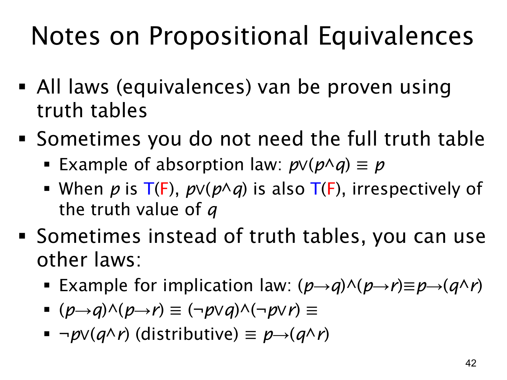

L1.1 · 第 42 页讲解原文
查看这一页课件

如何证明命题等价
这一页说明，前面列出的等价规律并不是只能背下来；每一条都可以证明。最通用的方法是列真值表：对涉及的所有命题变量列出全部赋值，逐行计算等号两侧。如果每一行两侧真值相同，就证明了等价。两个变量有 22=4 行，三个变量有 23=8 行。
但有时不必列完整表。以吸收律 p∨(p∧q)≡p 为例，只按 p 分两种情况：
- 若 p=T，左侧已经因为第一个 p 而为真，右侧也为真。
- 若 p=F，p∧q 必为假，左侧和右侧都为假。
这两种情况覆盖了所有可能，而且都不依赖 q 的真值，所以等价成立。这个证明的关键是找一个足以决定整个式子的变量。
还可以用已经证明的等价律进行代数式推导。页上的例子是
(p→q)∧(p→r)≡p→(q∧r).
按条件句等价式 a→b≡¬a∨b，再按分配律，最后反向使用条件句等价式：
(p→q)∧(p→r)≡(¬p∨q)∧(¬p∨r)≡¬p∨(q∧r)≡p→(q∧r).
每一步都对所有真值赋值保持结果，因此首尾也等价。实际解题时，可以根据式子的结构选方法：变量很少且想机械验证时用真值表；有明显的决定性变量时分类讨论；能够识别已有规律时逐步等价变形。无论选哪一种，都要交代为什么覆盖了所有情况或每一步用了哪条已知规律。